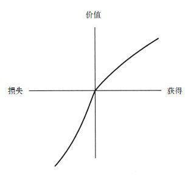

风险性选择
做出类似是否带雨伞或是否参战这种有风险的决策时，人们是不会知道其结果的。因为还有很多不确定因素在里面，比如天气好坏或敌人的强弱。是否会做出某项决策可以被看成是否会打某种赌，当然，是赌就会产生不同的结果，且不同的结果会有不同的概率。因此，对于在一定风险下的决策制定的研究关注的就是在简单的赌钱和确定的概率间的决策，并希望这些简单的问题能对风险和价值的研究有所启示。
我们在研究风险决策问题时提出了一套方案，此方案的许多假设都是从人们对金钱和概率反应的心理物理学分析中得来的。对于决策制定的心理物理学分析最早出现在丹尼尔·伯努利于1738年发表的一篇有重要影响力的文章中。伯努利在这篇文章里试图解释为什么人们总是会选择风险规避，而随着财富增长选择风险规避的意愿却降低了。为了更明白地说明风险规避和伯努利的分析，请思考这样一个问题：我们现在面临两种选择，一种是有85%的概率赢得1000美元（15%的概率什么也得不到），一种是肯定会得到800美元。虽然从数学的角度来看，选择冒险会得到更多的好处，但大多数人还是更愿意选择确定的事。赌钱的结果是经权衡后的平均值，这种平均值在计算时会把每种可能的结果进行权衡。在刚提到的问题中，赌一把的结果可表示为0.85×1000+0.15×0 =850（美元），这比选择确定的事（肯定会得到800美元）所得到的钱要多。选择确定的事就是风险规避。大体来看，选择确定的事而不是赌一把（所得结果更多或同等）被称为风险规避；不选择确定的事，而愿意赌一把（可能性更小或相等）被称为风险追求。
伯努利建议不要通过收益结果来评估前景，而是要通过这些结果的主观价值来评估。某次赌的主观价值也是一种经过权衡后的平均值，但在这里，每种结果的主观价值是通过其发生的可能性来权衡的。为了在这个框架下解释风险规避，伯努利提出主观价值或者说是效用，可用收益的凹函数来表示。例如，在这种函数下，200美元和100美元间效用的不同比1 200美元和1 100美元间效用的差异更明显。从函数凹处可以看出，得到800美元的主观价值比得到1 000美元的价值的80%要大。因此，效用函数的凹处也就意味着是风险规避，人们会选择肯定能得到800美元，而不是有80%的概率得到1 000美元，尽管这两种可能最终得到的钱数一样。
在决策分析中，常用总财富状态来描述决策的结果。例如，一个下20美元赌注的抛硬币游戏，就可以表示成在个人当前的财富状态W和等概率的可能变成W+20美元或W–20美元的财富状态间的选择。这种表示方法在心理学上是不现实的，因为人们通常不会从财富状态出发来考虑概率相对较小的结果，人们常会从收益、损失和中立的结果（比如维持现状）的角度来考虑。如果主观价值的表示方式如我们提出的那样，是财富的变化而不是最终的财富状态，那么对于结果的心理物理学分析就应该应用到获得和损失上来，而不是应用于总财产上。这种假设在对待有风险的选择方面发挥着重要作用，我们称之为前景理论。无论是通过反省还是心理物理学的测量，都表明主观价值是个关于获得多少的凹函数。同样的归纳也适用于描述损失。损失200美元和100美元的主观价值的区别要比损失1 200美元和1 100美元的主观价值的区别要大。当把获得和损失的价值函数结合到一起时，我们就得到了一个S形的函数，如图B–1所示。

图B-1
图中显示的价值函数是由获得和损失来定义的，而不是通过总财富值来定义的。在获得的情况下是凹面，在损失的情况下是凸面，损失情况下的曲线比获得情况下的曲线更陡。该图表示的情况就是损失厌恶，表明了获得某笔钱的吸引力要弱于人们想要规避某笔损失的意愿。损失厌恶解释了为什么人们不愿在抛硬币的游戏中选择有同等概率的赌注：可能的收益的吸引力并不足以抵消可能的损失带来的厌恶。例如，在以大学生为样本的抛硬币实验中，如果赢得的收益不到30美元，大多数受试者都会拒绝冒10美元的风险。
对风险决策的假设在经济理论中占有核心地位。然而，正像收益曲线的凹面表示的是风险规避一样，损失曲线的凸面也表示着风险追求。确实如此，在损失的情况下选择风险追求作用很大，尤其是在损失的概率很大时。例如，人们在有85%的概率损失1000美元（15%的可能性什么也不损失）和肯定会损失800美元间作出选择时，大多数人都愿意选择赌一把而不是选择确定的损失。这就是风险追求。因为赌一把的期望值（–850美元）比确定事件的期望值（–850美元）要低。在损失情况下的风险追求已经得到了一些研究员的证实。即使在结果不涉及钱时，这种结论也得到了证实，比如疼痛时间和生命的损失。在获益的情况下选择风险规避和在损失的情况下选择风险追求是错的吗？这些偏向与对得失的主观价值的强烈直觉相符合，其前提是人们可自由选择对获得和损失的自我价值。然而，我们会看到这条S形价值函数曲线所显示的含义时，从规范的角度来看，它是不被接受的。
为了解决规范的问题，我们从心理学转向决策理论。现代的决策理论最早可追溯到冯。诺依曼和摩根斯顿的研究。他们创建了几条定性原则或公理，而且这些原则和公理能左右理性的决策制定者的偏向。其中的公理包括有传递性（如果A比B更受青睐，B比C更受青睐，那么A就比C更受青睐）、替代性（如果A比B更受青睐，那么赢得A或C青睐的可能性就比赢得B或C青睐的可能性更大），以及其他一些技术性公理。针对理性决策公理的规范化和描述化状态已经有了广泛的讨论。特别是有证据显示，人们不总是遵从替代性公理，而且对于这个公理的规范性优点还有很多反对意见。然而，所有关于理性决策的分析都包含了两条原则：主导性和不变性。
主导性要求如果前景A在各方面和前景B都一样好，但至少A在一方面强于B，那A就应比B更受青睐。不变性要求在众多前景中的偏向不应依从于描述的方式。特别是，如果两种表达方式不同的问题同时出现，能被界定为实质是相同的，那么这两种表达方式不在同一时间出现时，人们也应该对它们持有同样的偏向。现在，我们给出了不变性的要求，这种要求虽然看上去很基础且无关紧要，但人们却不是总能做到。